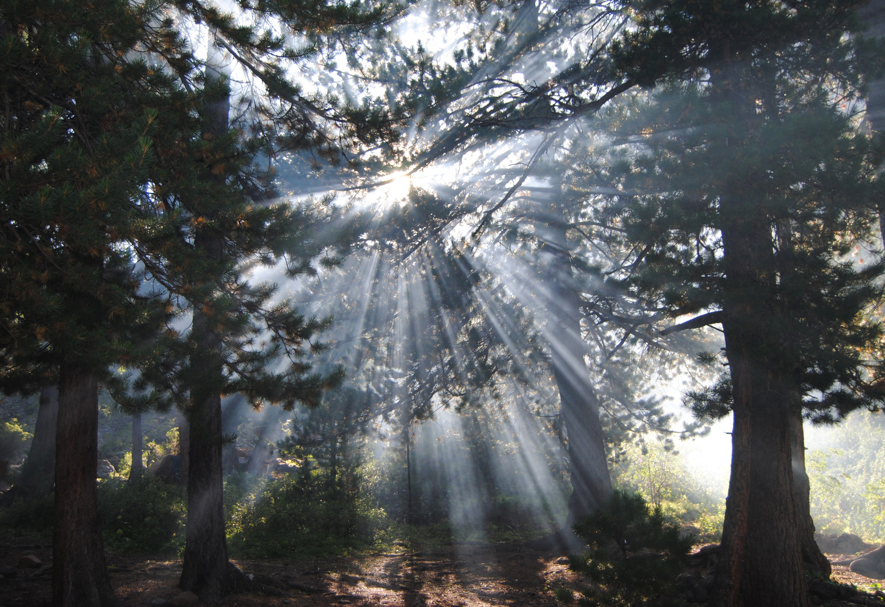

Поможем легким планеты вместе !
Присоединяйся к благотворительной акции "Сохрани лес"
Новости
Присоединяйся к команде волонтеров !
Запишись на благотворительный фестиваль !
Сохраним природу вместе! Приобретите наш мерч !
Алтайский заповедник
Леса тут в основном хвойные, растут пихта, лиственница, ель, сосна, но можно наткнуться и на привычную берёзу. Особая гордость заповедника — чистые кедровые высокогорные леса, в которых кедры достигают 1,8 м в диаметре и 400–450 лет по возрасту. 34 вида местных мхов, грибов, лишайников и сосудистых растений внесены в Красные книги Республики Алтай и России. А ещё заповедник богат на эндемики — их здесь свыше 200. Редких и исчезающих животных бродит по местным лесам 59 видов, это 52% охраняемых обитателей Республики Алтай. Одна из группировок уникального снежного барса нашла приют именно в этом заповеднике. Кроме того, в нём прекрасно себя чувствуют редкий алтайский горный баран, сибирская кабарга, лесной подвид северного оленя и др. Заповедник входит в объект Всемирного наследия ЮНЕСКО "Золотые горы Алтая".
Лапландский заповедник
Этот заповедник в западной части Мурманской области — яркий образчик северной тайги. Комфортнее всего тут себя чувствуют растения, приспособленные к суровым арктическим условиям. Под сенью еловых и сосновых лесов растут брусничники, черничники и вереск, во влажных лесах процветают папоротники, купальница и лесная герань. Отличительная черта местной экосистемы — насекомоядные растения, которых здесь аж несколько видов: росянки, жирянки и пузырчатки. Набор животных типично северный: норвежский и лесной лемминги, бурый медведь, северный олень, куница и др.